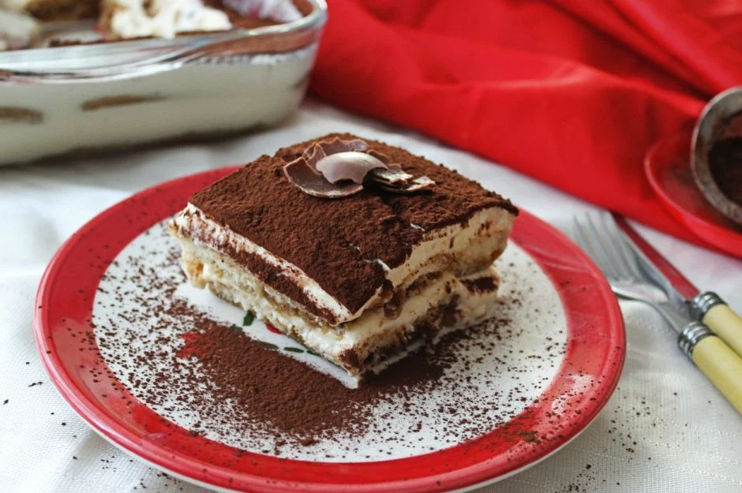

Tiramisu

Ingredients
6 servings
- 3 egg yolks
- ¼ cup white sugar
- 2 teaspoons vanilla extract
- 1⅛ cups mascarpone cheese
- 24 ladyfingers
- 1½ cups brewed coffee
- 1 tablespoon unsweetened cocoa powder
Directions
- In a medium bowl, beat yolks, sugar, and vanilla until smooth and light yellow. Fold mascarpone into yolk mixture. Set aside.
- Dip ladyfingers briefly in coffee and arrange 12 of them in the bottom of an 8x8-inch dish. Spread half the mascarpone mixture over ladyfingers. Repeat with remaining ladyfingers and mascarpone. Cover and chill 1 hour. Sprinkle with cocoa just before serving.
Return to the main page